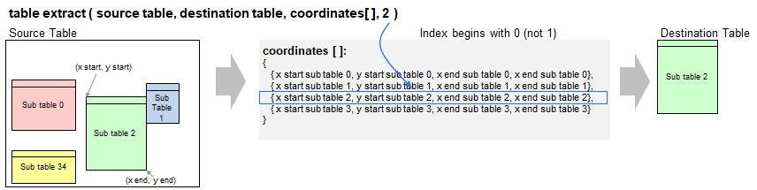

Function Names
table extractDescription
This function extracts a sub-table from a table using coordinates of the sub-table. The coordinates are typically generated with
the function table explore() and optionally filtered with table filter(). Alternatively, you can specify the coordinates
directly.

This function extracts exactly 1 table. If the coordinates describe more than 1 sub-table, then call this function for every
sub-table using different index values to be specified in the 3rdfunction parameter.
Call as: procedure
Restrictions
Indirect parameter passing is disabled
Parameter count
4-6
Parameters
| No. | Type | Description |
|---|---|---|
| 1. input |
string | Name of existing table This is the original table which contains at least one sub-table to extract |
| 2. input |
string | Name of destination table The extracted source table will be written into this table. The table will be created automatically if it is not yet existing Using appropriate offset values allows to add various sub-tables into one destination table, e.g. by arranging them next or below each other. |
| 3. input |
matrix of numerals | Coordinates of identified sub-tables The matrix of numerals is a set which contains 0, 1 or more sets where each of them refers to a found sub-table and contain 4 numerals marking top left and bottom right coordinates: { { x start, y start, x end, y end }, { x start, y start, x end, y end }, ... }. Normally, provide the return value from table explore() or table filter() in this parameter. |
| 4. input |
numeral | Index The index refers to one coordinate in the list of coordinates provided in the 3rd function parameter. The range is between 0 and coordinates[]{}-1 where coordinates[] is assumed to contain the list of coordinates. Note: Only one sub-table can be retrieved at a time. |
| Opt. 5. input |
numeral | Row offset This value rules the vertical offset of the sub-table to be added in the destination table. Use 0 to write the table beginning on row 0, 1 on the next row below, etc. To append tables vertically, use the function table length() and add a small number on top in order to provide some accetable spacing. Default value: 0 |
| Opt. 6. input |
numeral | Column offset This value rules the horizontal offset of the sub-table to be added in the destination table. Use 0 to write the table starting at the leftmost column. Use larger nummbers to write the table further to the right. To append tables horizontally, use the function table row width() or table max width() and add a small number on top in order to provide some accetable spacing. Curiosity: If you use the starting coordinates, then you can place the sub-tables in their original positions in the new table, using the same horizontal and vartical offsets. Default value: 0 |
Examples
table load( test, "Examples\Table Explore Demo.csv" );
table list ( test );
coords[] = table explore ( test );
coords 1[] = table filter( test, coords[], 'Profession' );
table extract( test, out, coords 1[], 0 );
coords 2[] = table filter( test, coords[], 'Cities' );
table extract( test, out, coords 2[], 0, 0, table row width(out) );
echo("Extracted table containing 'Profession' and 'Cities' in headers");
table list( out );Output
0 : Last Name | First Name | Town | | | Family Name | First Name | Town | | Country
1 : Andersson | Andy | Boston | | | Andersson | Andy | Boston | | USA
2 : Bethel | Betty | Cambridge | | | Bethel | Betty | Cambridge | | U.S.
3 : Charlsson | Charles | Baltimore | | | | | | |
4 : Dickson | Dieter | W. DC | | | | | | |
5 : | | | | | Given Name | Profession | | |
6 : Emmerich | Elana | Brussels | | | Girolamo | Acteur | | |
7 : | | | | Cities | Dominique | Dompteur | | |
8 : | | | | Prague | Dimitri | Clown | | |
9 : | | | | Warsaw | | | | |
10 : | | | | Bucharest | | | | |
11 : | | | | Budapest | | | | |
12 : | | | | Istanbul | | | | |
13 : | | | | Cairo | | | | |
Extracted table containing 'Profession' and 'Cities' in headers
0 : Given Name | Profession | Cities
1 : Girolamo | Acteur | Prague
2 : Dominique | Dompteur | Warsaw
3 : Dimitri | Clown | Bucharest
4 : | | Budapest
5 : | | Istanbul
6 : | | Cairo